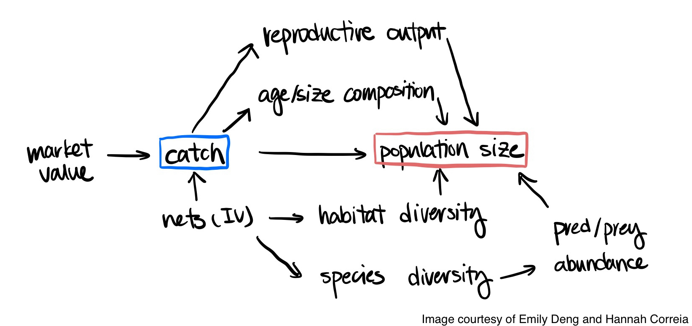
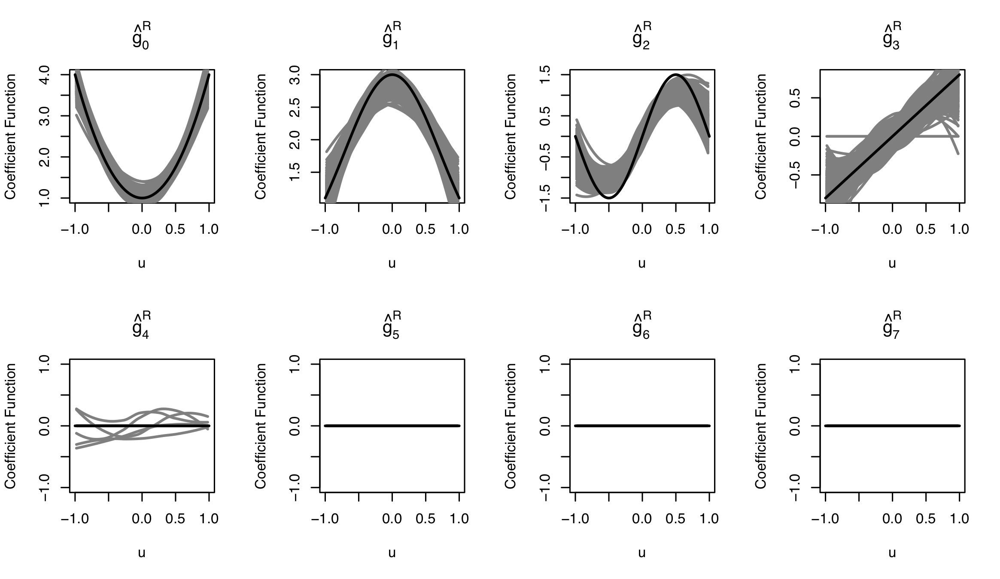
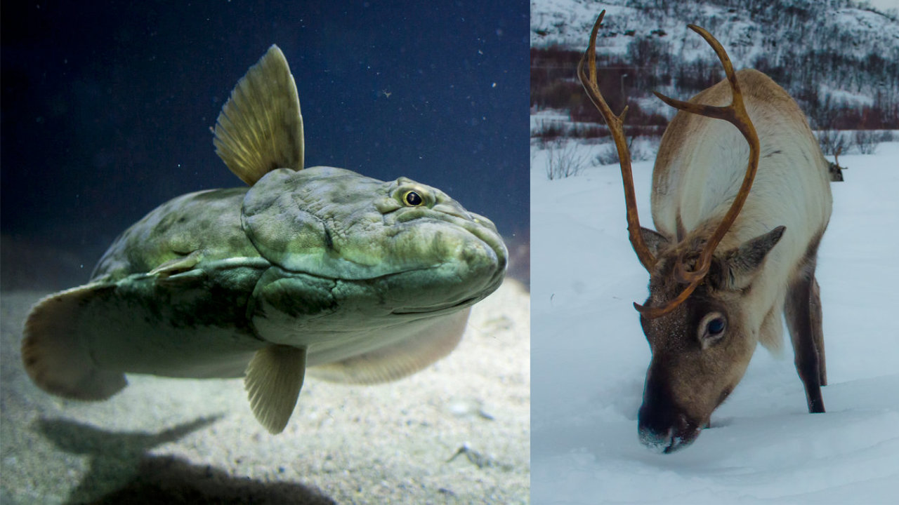
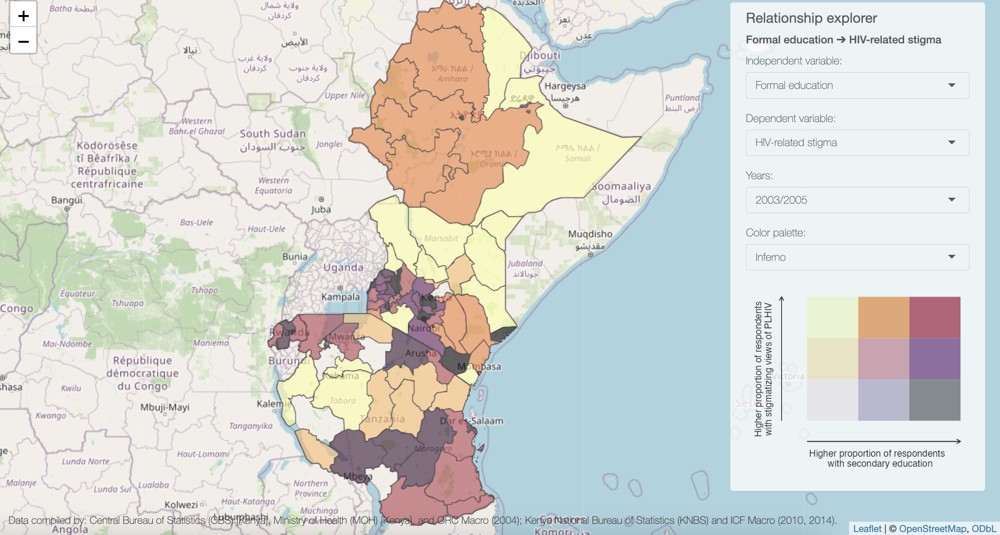

I am a Postdoctoral Fellow at the Johns Hopkins Whiting School of Engineering working with Dr. Paul Ferraro. From 2019 to 2022, I was a Harvard Data Science Initiative Postdoctoral Fellow at the Harvard TH Chan School of Public Health. I earned a PhD in Biology and MS in Statistics from Auburn University.
I focus on the development and application of robust statistical, causal, and ML/AI methods to estimate the consequences of environmental change, evaluate the role of interventions in modifying human and animal behaviors, and quantify the causes and effects of environmental and social changes on ecological, human, and planetary health.
Causality in ecology

Integrating and advancing causal inference methods for estimating nonlinear causal relationships in complex ecological systems
(Image: Causal diagram illustrating hypothesized causal relationships between market value, catch, and population size of a commercially important marine fish species)Robust estimation for non- and semi-parametric models

Developing and applying robust nonparametric statistical procedures for nonlinear modeling of climate change effects
(Image: Coefficient functions of a single-index varying coefficients regression model estimated using rank-based estimation with group LASSO selection)
Spatiotemporal effects of climate change on population dynamics

Modeling spatial and temporal effects of ecological, environmental, and climatic change on population and species dynamics of marine and terrestrial species at regional to continental scales
(Image: Transition of conservation practice adoption to persistence over time, including churn of users dropping below a minimum threshold for persistent use of a conservation practice)
(Image: Bayesian MCMC predictions of the frequency of multiple paternity across litter/brood sizes for species belonging to four taxa (colored circles). The solid red line represents the frequency of multiple paternity estimated using a zero-truncated binomial distribution)Interpretable ML/AI methods for identifying causes of HIV-related stigma

Developing novel workflows combining interpretable ML/AI methods and causal reasoning for identifying causes of and interventions for HIV-related stigma
(Image: Association between formal education and HIV-related stimga in Eastern Africa from Demographic and Health Survey data)